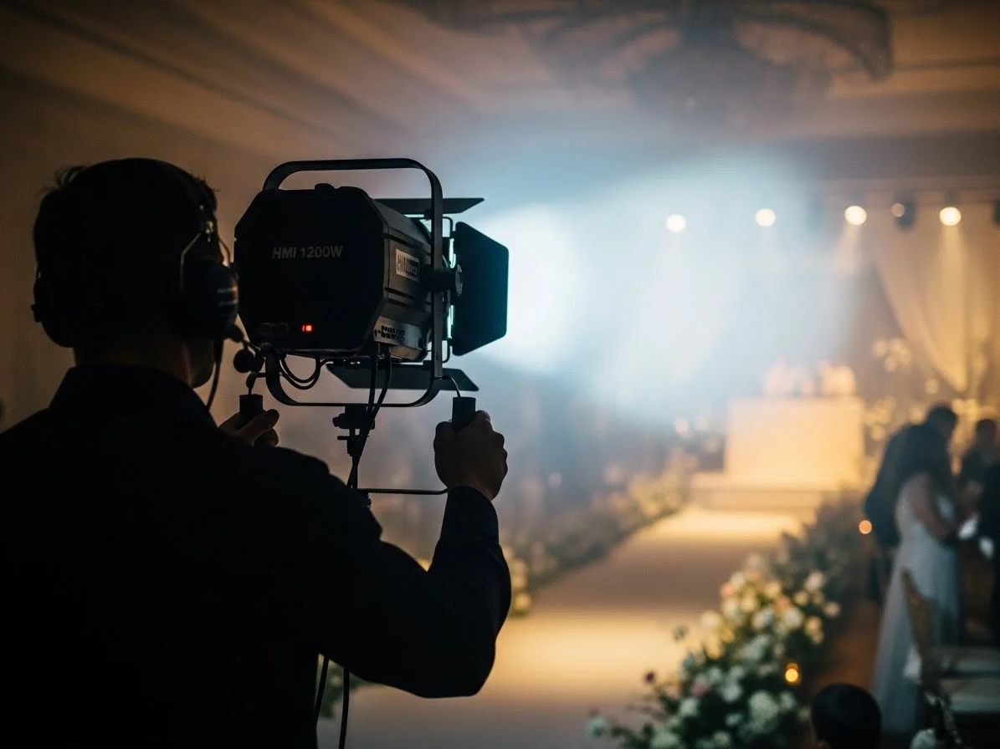

Mas Popular
Seguidor HMI 1200W
"Potencia profesional para grandes eventos"
El caballo de batalla de la industria del espectaculo. Utiliza lampara de descarga HMI de 1200W con temperatura de color de 6000K que produce una luz blanca brillante y natural. Alcance efectivo de hasta 30 metros, ideal para salónes grandes, teatros y eventos al aire libre. Incluye 7 colores dicroicos más blanco y filtros de correccion.
1200W / 6000K
Alcance 30m